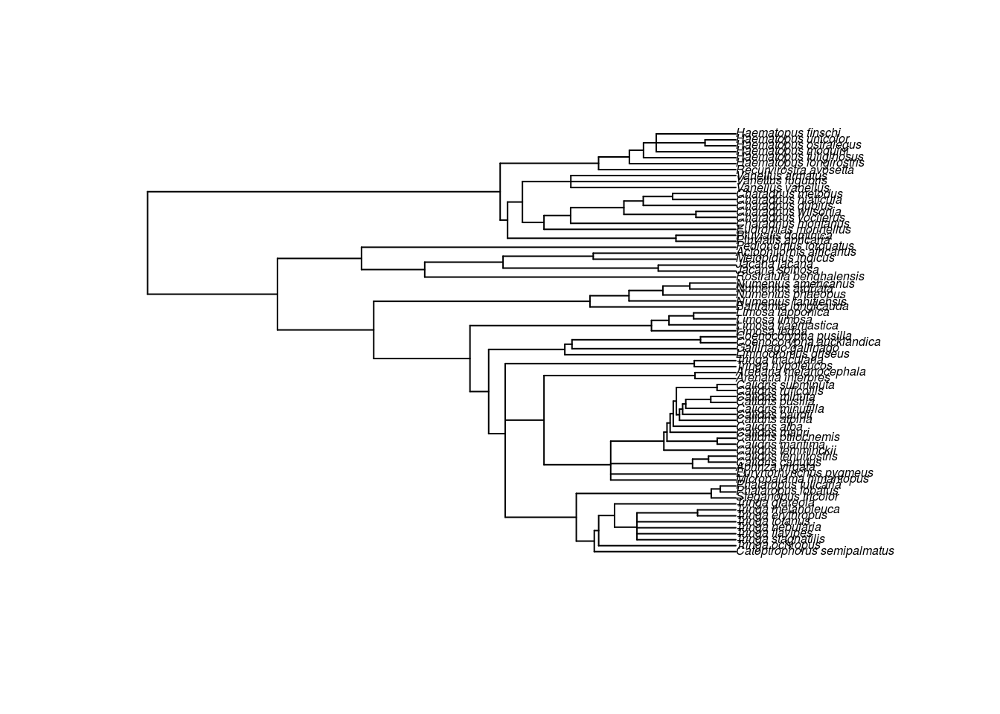
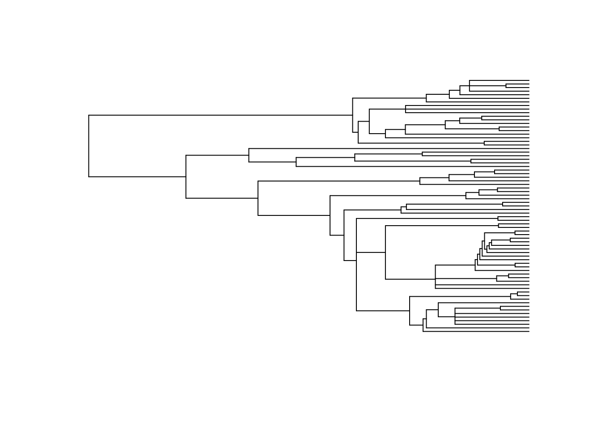
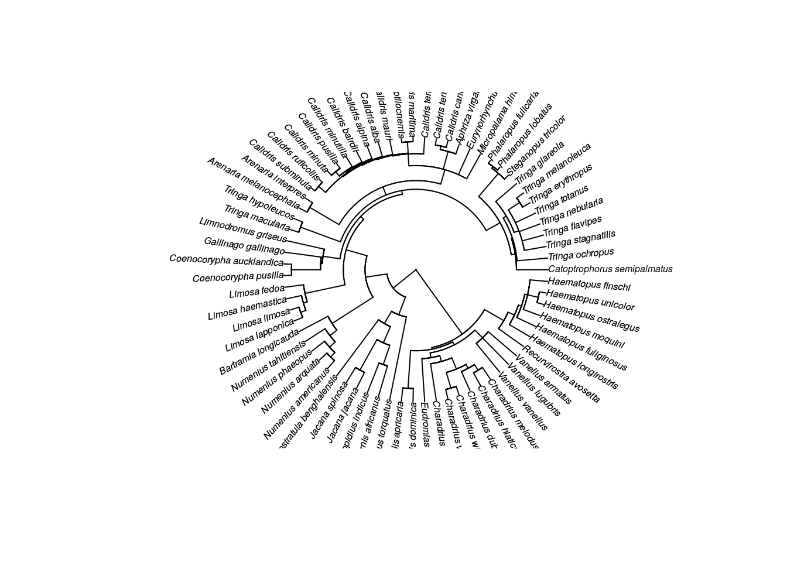
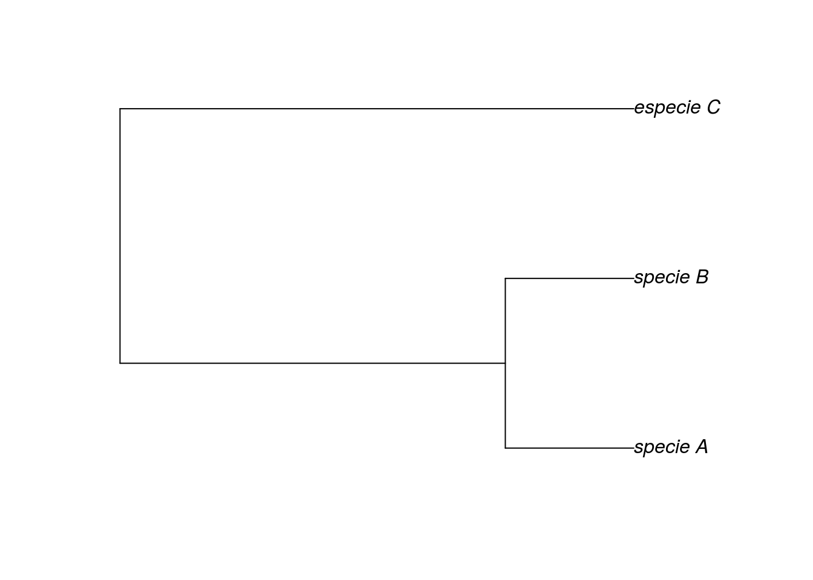

3 Árvores filognéticas
Pacotes necessários neste capítulo:
library(ape)3.1 Como carregar um árvore filogenética no R?
A função read.tree() pode ser utilizada para ler árvores no formato Newick. Utilize o argumento file para indicar o local do arquivo. No exemplo abaixo, o arquivo arvore.tre está dentro da pasta filogenia.
arvore <- read.tree(file = "filogenia/arvore.tre")Confira se a árvore foi carregada corretamente (número de espécies, número de nós, nome das espécies, se a árvore é enraizada e se possui informações sobre o comprimento dos ramos)
arvore##
## Phylogenetic tree with 71 tips and 62 internal nodes.
##
## Tip labels:
## Catoptrophorus_semipalmatus, Tringa_ochropus, Tringa_stagnatilis, Tringa_flavipes, Tringa_nebularia, Tringa_totanus, ...
##
## Rooted; includes branch lengths.3.2 Como visualizar a árvore
plot(arvore, cex = .5) # cex regula o tamanho da fonte 
plot(arvore, show.tip.label = F) # esconde os nomes as espécies
plot(arvore, type = "fan", cex = .5) # Plota uma árvore circular
3.3 Características da sua árvore
# Veja a lista de espécies da sua árvore:
arvore$tip.label## [1] "Catoptrophorus_semipalmatus" "Tringa_ochropus"
## [3] "Tringa_stagnatilis" "Tringa_flavipes"
## [5] "Tringa_nebularia" "Tringa_totanus"
## [7] "Tringa_erythropus" "Tringa_melanoleuca"
## [9] "Tringa_glareola" "Steganopus_tricolor"
## [11] "Phalaropus_lobatus" "Phalaropus_fulicaria"
## [13] "Micropalama_himantopus" "Eurynorhynchus_pygmeus"
## [15] "Aphriza_virgata" "Calidris_canutus"
## [17] "Calidris_tenuirostris" "Calidris_temminckii"
## [19] "Calidris_maritima" "Calidris_ptilocnemis"
## [21] "Calidris_mauri" "Calidris_alba"
## [23] "Calidris_alpina" "Calidris_bairdii"
## [25] "Calidris_minutilla" "Calidris_pusilla"
## [27] "Calidris_minuta" "Calidris_ruficollis"
## [29] "Calidris_subminuta" "Arenaria_interpres"
## [31] "Arenaria_melanocephala" "Tringa_hypoleucos"
## [33] "Tringa_macularia" "Limnodromus_griseus"
## [35] "Gallinago_gallinago" "Coenocorypha_aucklandica"
## [37] "Coenocorypha_pusilla" "Limosa_fedoa"
## [39] "Limosa_haemastica" "Limosa_limosa"
## [41] "Limosa_lapponica" "Bartramia_longicauda"
## [43] "Numenius_tahitiensis" "Numenius_phaeopus"
## [45] "Numenius_arquata" "Numenius_americanus"
## [47] "Rostratula_benghalensis" "Jacana_spinosa"
## [49] "Jacana_jacana" "Metopidius_indicus"
## [51] "Actophilornis_africanus" "Pedionomus_torquatus"
## [53] "Pluvialis_apricaria" "Pluvialis_dominica"
## [55] "Eudromias_morinellus" "Charadrius_montanus"
## [57] "Charadrius_vociferus" "Charadrius_wilsonia"
## [59] "Charadrius_dubius" "Charadrius_hiaticula"
## [61] "Charadrius_melodus" "Vanellus_vanellus"
## [63] "Vanellus_lugubris" "Vanellus_armatus"
## [65] "Recurvirostra_avosetta" "Haematopus_longirostris"
## [67] "Haematopus_fuliginosus" "Haematopus_moquini"
## [69] "Haematopus_ostralegus" "Haematopus_unicolor"
## [71] "Haematopus_finschi"# Veja o comprimento dos ramos:
arvore$edge.length## [1] 18.072 13.400 13.400 2.600 2.300 9.900 2.499 19.701 0.615 19.086
## [11] 2.210 3.114 13.762 13.762 13.762 13.762 8.438 5.324 5.324 16.876
## [21] 18.780 3.420 1.262 2.158 2.158 5.400 9.287 17.413 17.413 11.394
## [31] 6.019 2.221 3.798 3.798 7.400 10.013 0.436 6.989 2.588 2.588
## [41] 0.435 9.142 0.435 8.707 0.436 0.435 7.836 0.436 7.400 0.435
## [51] 6.965 3.482 3.483 3.483 5.662 2.609 2.609 21.020 5.680 5.680
## [61] 26.321 5.779 5.779 10.600 23.800 1.000 22.800 17.890 4.910 4.910
## [71] 25.261 11.739 2.436 9.303 3.434 5.869 5.869 30.101 20.299 5.430
## [81] 14.869 4.719 10.150 3.746 6.404 6.404 11.700 8.800 43.300 10.900
## [91] 21.600 10.800 10.800 12.555 19.845 19.845 52.100 49.072 1.033 23.437
## [101] 8.330 8.330 2.067 3.000 26.700 3.708 22.992 7.417 10.027 5.548
## [111] 5.548 2.693 12.882 4.089 8.793 8.793 6.739 22.961 22.961 22.961
## [121] 13.700 19.100 4.283 14.817 1.968 12.849 1.777 11.072 6.789 4.283
## [131] 4.283 11.072# Como verificar se a árvore é ultramétrica?
is.ultrametric(arvore)## [1] TRUE# Como verificar se a árvore é enraizada?
is.rooted(arvore)## [1] TRUESe a árvore não tiver nome nos nós (nodes), utilize essa função para criar nomes para os nós
arvore$node.label## NULLarvore <- makeNodeLabel(arvore)
# Veja que agora os nós possuem um nome:
arvore$node.label## [1] "Node1" "Node2" "Node3" "Node4" "Node5" "Node6" "Node7"
## [8] "Node8" "Node9" "Node10" "Node11" "Node12" "Node13" "Node14"
## [15] "Node15" "Node16" "Node17" "Node18" "Node19" "Node20" "Node21"
## [22] "Node22" "Node23" "Node24" "Node25" "Node26" "Node27" "Node28"
## [29] "Node29" "Node30" "Node31" "Node32" "Node33" "Node34" "Node35"
## [36] "Node36" "Node37" "Node38" "Node39" "Node40" "Node41" "Node42"
## [43] "Node43" "Node44" "Node45" "Node46" "Node47" "Node48" "Node49"
## [50] "Node50" "Node51" "Node52" "Node53" "Node54" "Node55" "Node56"
## [57] "Node57" "Node58" "Node59" "Node60" "Node61" "Node62"3.4 Existem politomias na minha árvore?
Se a sua árvore não tiver politomias, o número de nós dever ser igual ao número de espécies -1. Se isso não ocorrer, sua árvore possue politomias:
Nnode <- arvore$Nnode # Número de nós
Nsp <- length(arvore$tip.label) # Número de espécies
# Existem politomias na minha árvore?
Nnode == (Nsp -1)## [1] FALSE# Quantas politomias existem na minha árvore?
(Nsp -1) - Nnode## [1] 83.5 Como remover uma/várias espécies da árvore?
drop.tip(arvore, arvore$tip.label[1]) # remove a primeira espécies da árvore##
## Phylogenetic tree with 70 tips and 61 internal nodes.
##
## Tip labels:
## Tringa_ochropus, Tringa_stagnatilis, Tringa_flavipes, Tringa_nebularia, Tringa_totanus, Tringa_erythropus, ...
## Node labels:
## Node1, Node2, Node3, Node4, Node5, Node6, ...
##
## Rooted; includes branch lengths.drop.tip(arvore, arvore$tip.label[1:5]) # remove as cinco primeiras espécies##
## Phylogenetic tree with 66 tips and 60 internal nodes.
##
## Tip labels:
## Tringa_totanus, Tringa_erythropus, Tringa_melanoleuca, Tringa_glareola, Steganopus_tricolor, Phalaropus_lobatus, ...
## Node labels:
## Node1, Node2, Node3, Node4, Node5, Node6, ...
##
## Rooted; includes branch lengths.drop.tip(arvore, "Tringa_glareola") # remove a espécies "Tringa_glareola"##
## Phylogenetic tree with 70 tips and 61 internal nodes.
##
## Tip labels:
## Catoptrophorus_semipalmatus, Tringa_ochropus, Tringa_stagnatilis, Tringa_flavipes, Tringa_nebularia, Tringa_totanus, ...
## Node labels:
## Node1, Node2, Node3, Node4, Node5, Node6, ...
##
## Rooted; includes branch lengths.# Como cortar um node da árvore (nó)?
extract.clade(phy = arvore, node = "Node61") # remove o nó 61##
## Phylogenetic tree with 4 tips and 2 internal nodes.
##
## Tip labels:
## [1] "Haematopus_moquini" "Haematopus_ostralegus" "Haematopus_unicolor"
## [4] "Haematopus_finschi"
## Node labels:
## [1] "Node61" "Node62"
##
## Unrooted; includes branch lengths.3.6 Exporte sua arvore
Depois de remover as espécies que deseja, você pode salvar a árvore em um novo objeto:
arvore2 <- drop.tip(arvore, c("Tringa_glareola", "Haematopus_ostralegus"))
arvore2 # perceba que agora a árvore possui 69 espécies (em vez de 71)##
## Phylogenetic tree with 69 tips and 60 internal nodes.
##
## Tip labels:
## Catoptrophorus_semipalmatus, Tringa_ochropus, Tringa_stagnatilis, Tringa_flavipes, Tringa_nebularia, Tringa_totanus, ...
## Node labels:
## Node1, Node2, Node3, Node4, Node5, Node6, ...
##
## Rooted; includes branch lengths.Para exportar a árvore em formato Newwick, utilize a função ‘write.tree()’
write.tree(phy = arvore2, file = "arvore2.tre")3.7 Como criar um árvore filogenética manualmente?
##
## Phylogenetic tree with 3 tips and 2 internal nodes.
##
## Tip labels:
## [1] "specie_A" "specie_B" "especie_C"
##
## Rooted; includes branch lengths.